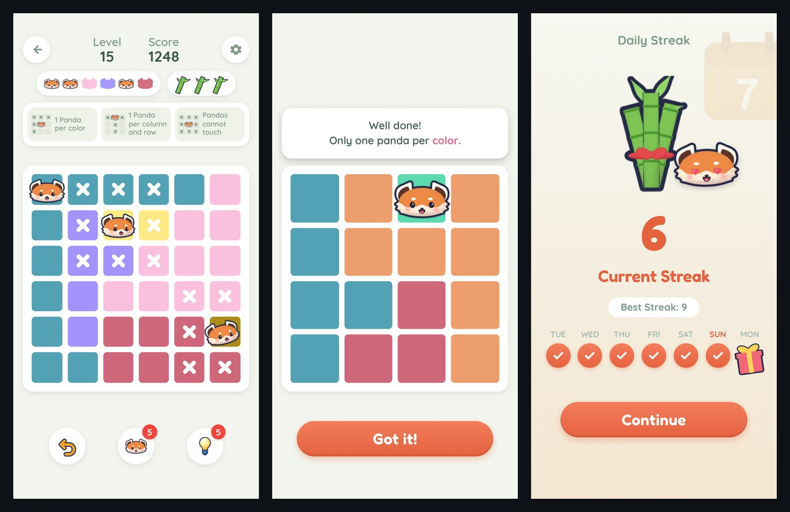

What it is
Tap a square to mark it, double tap to place a panda. Each level gives you three bamboo lives, plus hints, undo and a panda helper. There are 200 generated levels from 4x4 to 8x8, and each has exactly one solution you can reach by logic alone, with no guessing. A daily puzzle and streaks bring players back.
An interactive tutorial teaches the rules. The colour palette is tested under simulated protanopia, deuteranopia and tritanopia, with optional patterns on top. The panda is my own Blender model and renders, with ten expressions. The rules engine has 43 unit tests.

Gameplay, the tutorial and the daily streak.

The store feature graphic.